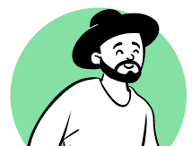
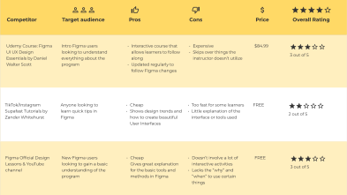
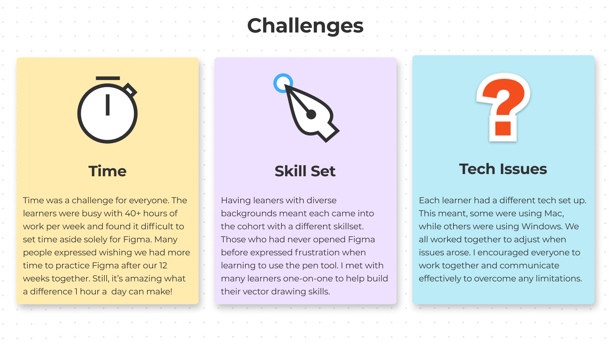
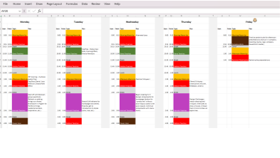
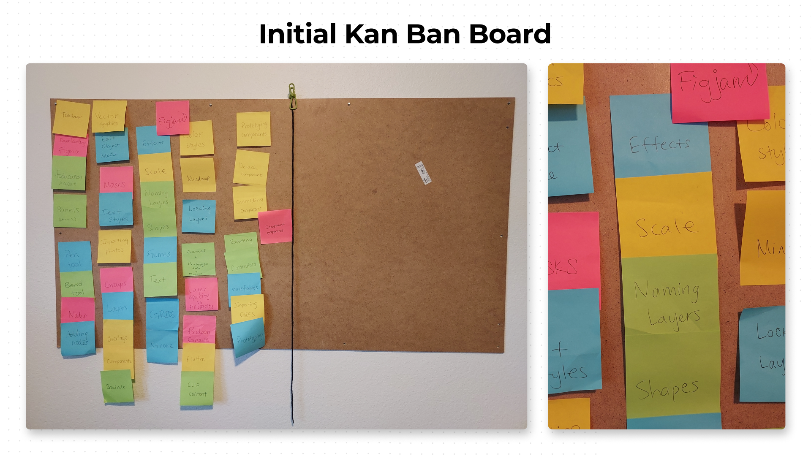
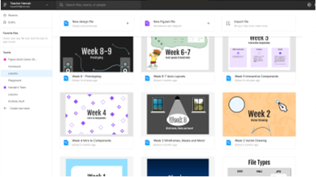
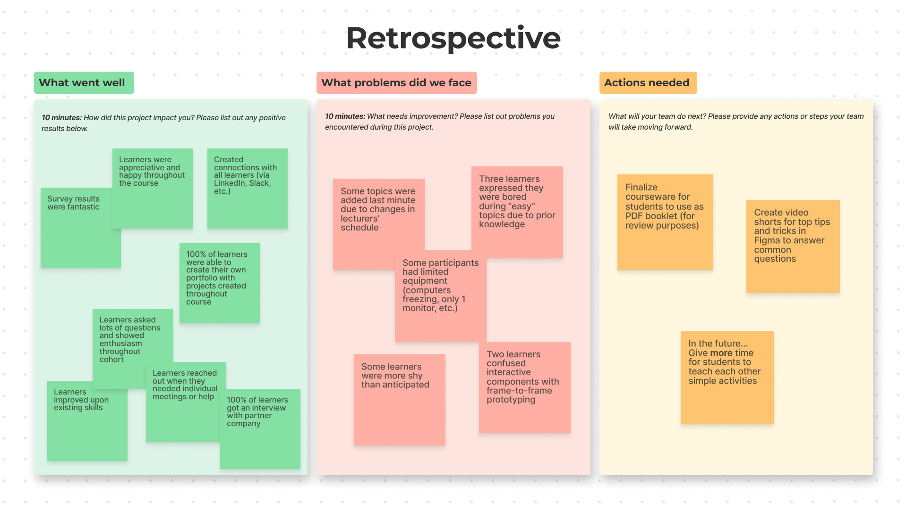

Learning Design | Training
I designed, developed and delivered a hands-on Figma learning experience for a career transition boot camp to prepare learners for UX Design roles at a Fortune 500 company.
This resulted in 80% of participants securing job offers within a month of completing the course.
Learners had twelve weeks to prepare for job applications with varying knowledge of an industry standard tool, Figma.
Design and deliver a well structured, adaptable learning approach that provided hands-on guidance for beginners (120 hour of live training), best practice frameworks for intermediate learners, and advanced problem-solving strategies to keep experienced learners engaged and job-ready (48 self-guided training activities).
Backwards Design, Competitive Analysis, User Interviews
Figma, Excel, Teams
Lead Designer (Learning Design, Training, Project Management, UI Design)
Starting from scratch to design a Figma course wasn't easy! I began my research with a competitive analysis to understand what resources already existed. Then, I began brainstorming (my favorite part of designing) and I came up with every feature and activity I could think of. Collecting existing resources was also helpful for finding inspiration. From there, I developed a course outline. In order to better understand the learners, I met with each of them individually during our first week together to chat about their technological abilities.
Newbie Nicole
29 yo | Phoenix, AZ | Unemployed
Bio
Newbie Nicole is artistic and loves to create things... on paper. They are new to Figma and are excited and enthusiastic, yet intimidated by the complexity of the program.
Goals
Frustrations
Midlevel Marget
32 yo | Chicago, IL | Unemployed
Bio
Midlevel Margaret was a passionate educator who is hoping to transition into the world of design. She has some experience using Figma to create posters for her classroom and is self taught.
Goals
Frustrations
Advanced Aaron

24 yo | Dallas, TX | Unemployed
Bio
Advanced Aaron studied design in college and has struggled to find a job. He is looking to gain more formal experience with Figma and produce stunning visuals for his portfolio.
Goals
Frustrations


My intention for this course was to set the learners up for success by incorporating every tip and trick possible. I collaborated with the two other instructors on the team to ensure my lessons aligned with the UX/UI topics they were covering in the morning classes. I started by using my original affinity diagram to create a physical Kan Ban board. Each tool, tip, or trick was written on a sticky note and moved to the “completed” side once we discussed it in class.
As all designers know, things do not always go according to plan, so I prepared as many activities that pertained to the topics I wanted to cover. As I began teaching, the learners had many questions and encouraged me to be flexible with my activities. Oftentimes we would begin a topic and start creating something, and end up incorporating additional tips and tricks! Thanks to the curiosity and enthusiasm of my learners, we were able to cover more than I had anticipated! They were both shocked and excited to see the hidden easter eggs in Figma. Did you know the chemical formula for caffeine is hidden in the software?



By the end of the 12 week cohort, each learner had gained experience using Figma to create everything from icons to fully interactive prototypes. At the end of each week, I created a review file for the learners to look over the concepts we covered and dive deeper into the topics they found difficult. At the conclusion of the course, I sent out a course evaluation form that showed my hard work paid off. Not only did my learners have the confidence to use Figma, they were excited about the power of the software.

